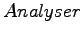

Nächste Seite: Repräsentation der Kategorien Aufwärts: Datenmodell Vorherige Seite: Datenbank Inhalt Index
Die Bibliothek Lucene macht bestimmte Vorgaben wie die Textdokumente, die von Lucene indiziert werden sollen, zu erstellen sind. (siehe 2.2.1)
In diesem Abschnitt soll kurz der Aufbau eines von Teamfound erstelltem Dokuments beschrieben werden. Zur Hilfestellung lohnt es sich Abbildung 2.3 anzuschauen.
Jede Html-Seite, die dem Index hinzugefügt werden soll, muss erstmal serverseitig heruntergeladen werden. Danach wird der Text und weitere Informationen extrahiert. Dies alles, sowie die Kategorien zu denen die Seite zugeordnet wurde, wird nun in ein Lucene-Dokument verpackt.
Das erste Feld (siehe 2.2.1), welches ein Teamfounddokument enthält, ist ein Schlüsselwortfeld. In diesem wird die Url zu der dieses Dokument gehört gespeichert. Dieses Feld wird nicht durch den Teamfound- (siehe 2.2.1) zerlegt, aber durchsuchbar im Index abgespeichert. Die Url wird also zur eindeutigen Identifikation eines Dokumentes benötigt. Zusätzlich ist es möglich den Index nach Urls zu durchsuchen.
Als nächstes speichern wir eine sehr kurze Zusammenfassung. Diese wird weder zerlegt noch indiziert. Sie dient ausschließlich als nähere Beschreibung eines Suchergebnisses einer Anfrage.
Ein weiteres Feld ist der Titel der Seite. Er wird zerlegt und indiziert. Anfragen die Schlüsselwörter enthalten, die im Titel vorkommen, erhalten dadurch eine höhere Wertigkeit.
Das wichtigste Feld neben der Url enthält den textuellen Inhalt der Seite. Dieser wird in Token zerlegt und indiziert. Anfragen an den Index durchsuchen grundsätzlich dieses Feld und das Titelfeld.
Die Ergebnisse solcher Anfragen sollen nun durch Kategoriezugehörigkeit eingeschränkt werden. Dafür umfassen Teamfounddokumente ein weiteres Feld, dass die Kategorien enthält denen das Dokument zugeordnet wurde.
Die Anfrage über Inhalt und Titel wird also mit einer zweiten Suchanfrage über dem Kategorienfeld verknüpft und eingeschränkt. Um solche Anfragen zu ermöglichen muss jedes Token in einem Kategoriefeld eindeutig einer Kategorie zuzuordnen sein.
Die einfachste Lösung war die ID einer Kategorie aus der Datenbank als Token zu benutzen, und diese in dem Kategoriefeld zu speichern. Damit es möglich ist die verschiedenen IDs zu unterscheiden, trennen wir diese mit einem eindeutigen Charakter voneinander ab. Den Teamfound- haben wir dementsprechend angepasst, so dass er die Tokens dieses Feldes einfach anhand des Trenncharakters generiert. Auf diese Weise können wir die Anfragen leicht so erweitern, dass sie mithilfe von Kategorien eingeschränkt werden können.